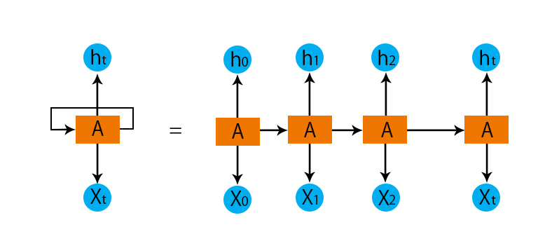

Modeling Time Series Data with LSTM
 This is my first attempt at RNN (Recurrent Neural Networks). The model consists of a simple LSTM (Long Short-Term Memory) network.
When creating this project, my goal was to familiarize myself with this branch of neural network architectures
and see how it works in practice in order to understand the strengths of such an approach to data.
This will enable me to undertake better projects in the future.
Time-series data is a specific type of data that requires a slightly different approach than using a regular neural network to build a model.
The project involved implementing a model for predicting patient mortality based on their Electronic Health Record (EHR) data. The data was sourced from Children's Hospital Los Angeles.
"The aim of creating such a model is to establish an analytical framework that medical professionals can utilize to predict patient mortality at any desired time.
Such a solution offers crucial feedback to clinicians when they are assessing the effects of treatment decisions or need to identify early warning signs for identifying patients at risk in a busy hospital care environment."
For source code please visit my Github repo: